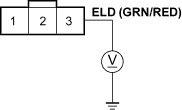
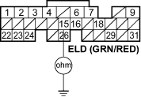

DTC P1297: ELD Circuit Low Voltage
- Reset the ECM (see page 11-4).
- Start the engine.
- Turn on the headlights.
Is DTC P1297 indicated?
YES - Go to step 4.
NO - Intermittent failure, system is OK at this time. Check for poor connections or loose wires at the ELD and at the ECM. 
- Turn the ignition switch and the headlights OFF.
- Disconnect the ELD 3P connector.
- Turn the ignition switch ON (II).
- Measure voltage between body ground and the ELD 3P connector terminal No. 3.
ELD 3P CONNECTOR

Wire side of female terminals
Is there about 5 V?
YES - Replace the ELD.
NO - Go to step 8.

- Turn the ignition switch OFF.
- Disconnect ECM connector E (31P).
- Check for continuity between body ground and ECM connector terminal E15.
ECM CONNECTOR E (31P)

Wire side of female terminals
Is there continuity?
YES - Repair short in the wire between the ECM (E15) and the ELD.
NO - Substitute a known-good ECM and recheck (see page 11-5). If symptom/indication goes away, replace the original ECM.